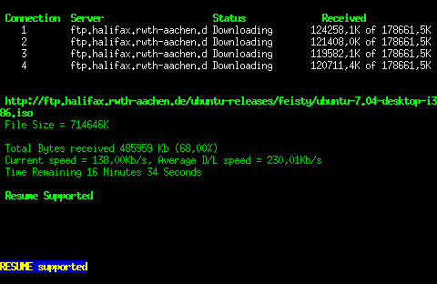

ProZilla
Archivierte Anleitung
Dieser Artikel wurde archiviert, da er - oder Teile daraus - nur noch unter einer älteren Ubuntu-Version nutzbar ist. Diese Anleitung wird vom Wiki-Team weder auf Richtigkeit überprüft noch anderweitig gepflegt. Zusätzlich wurde der Artikel für weitere Änderungen gesperrt.
Anmerkung: Die angegebenen Pakete sind nicht mehr alle verfügbar.
Zum Verständnis dieses Artikels sind folgende Seiten hilfreich:
 ProZilla  ist ein konsolenbasierter Downloadmanager, vergleichbar mit aria2, mit dem es möglich ist mehrere Verbindung auf einmal zu einem Server herzustellen. ProZilla verfügt über eine ncurses-Oberfläche.
ist ein konsolenbasierter Downloadmanager, vergleichbar mit aria2, mit dem es möglich ist mehrere Verbindung auf einmal zu einem Server herzustellen. ProZilla verfügt über eine ncurses-Oberfläche.
Installation¶
Das Programm ist leider nicht in den Quellen und muss selbst kompiliert werden. Folgende Abhängigkeiten müssen vorher installiert werden [1], neben build-essential,
gettext
libncurses5-dev
libstdc++6-4.1-dev
Paketliste zum Kopieren:
sudo apt-get install build-essential gettext libncurses5-dev libstdc++6-4.1-dev
sudo aptitude install build-essential gettext libncurses5-dev libstdc++6-4.1-dev
Hinweis: das letztgenannte Paket ist für 10.10. nicht mehr verfügbar!
Den Quellcode bekommt man von der Homepage der Aktuelle ist momentan 2.0.4. Dabei ist zu beachten, dass der "Tarballs (source)" von ProZilla heruntergeladen wird. ProzGUI kann mit dieser Anleitung nicht kompiliert werden! Nachdem der Quellcode entpackt worden ist[2] muss man den Quellcode verändern, sodass das Kompilieren auch gelingt. Dazu gibt man einfach folgenden Befehl im Ordner des Quellcodes ein:
sed -i 's/DL_Window:://' src/download_win.h
Danach kompiliert man das Programm mit dem bekannten Dreischritt [3].
Experten-Info:
Die Veränderungen am Quellcode ist notwendig, weil die neuen Compiler nicht mehr mit dem Quellcode zurecht kommen, ansonsten kommt folgende Fehlermeldung: download_win.h:55: Fehler: zusätzliche Qualifizierung »DL_Window::« an Element »print_status«
Benutzung¶
ProZilla ist ein Konsolenprogramm, welches über folgenden Befehl im Terminal [4] gestartet wird:
proz [OPTIONS] <URL>
Man kann einen unterbrochenen Download auch fortsetzten, dazu geht man in das Verzeichnis mit dem angefangenen Download und gibt als URL die Downloadadresse an. Danach wird man gefragt ob man den Download fortsetzen oder überschreiben will. Für das Fortsetzen drückt man "r" und für das Überschreiben "o"
Optionen¶
Die folgende Tabelle enthält einige wichtige Optionen von ProZilla.
| Option | Auswirkung |
-1 | Nur eine Verbindung zum Server erzwingen |
-k=<Anzahl> | Die Anzahl gibt an wie viele Verbindung zum Server aufgebaut werden, wenn das fehlt sind es 4 |
-v | Mehr Angaben bei Fehlern |
-P=<Zielordner> | Veränderung des Zielordners, standardmäßig ist es der aktuell befindliche Ordner |
- Erstellt mit Inyoka
-
 2004 – 2017 ubuntuusers.de • Einige Rechte vorbehalten
2004 – 2017 ubuntuusers.de • Einige Rechte vorbehalten
Lizenz • Kontakt • Datenschutz • Impressum • Serverstatus -
Serverhousing gespendet von